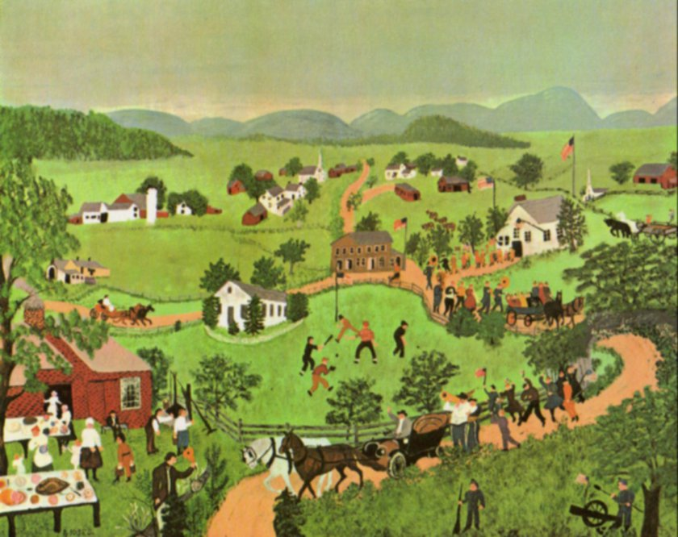

I am not a data scientist. Others have coined good terms like “Data Nerd” and “Citizen Data Scientist.” I’ll coin another: “Outsider Data Scientist.” I would style myself in the likeness of an “outsider” artist, Grandma Moses. She was an American artist who didn’t pick up a brush between childhood and old age, and had no formal training. The works she produced would never be mistaken for the old masters’ but they had a certain charm. Perhaps I might strive for that. I am also getting on in years.
I play around with R for fun. I enjoy thinking up ways to present complex information in a simple, compelling way. I attended an R conference where an axiom was presented by Dave Robertson that the value of information “still” on your computer is approximately zero and the value of information out in the world is infinitely more. Even if it is small that’s infinitely more than zero, right? That emboldened me to put stuff “out there.” Perhaps someone else might find it interesting. At a minimum this blog forces more rigor in my own thinking.
“Outsider” is a bit of a misnomer. I’m sure Grandma Moses saw an another painting or two in her life. Painting was pretty mature before Ms. Moses picked up her brush, but this whole data science thing has exploded in the last few years. It is very exciting to even be on the periphery of the event horizon. I am indebted to the R community for all the examples they have shared through R-Bloggers, Stack Overflow and Twitter. The tools provided by Posit (formerly RStudio) are the bomb!
This is a personal side project in no way associated with any organization I am affiliated with. My opinions here are mine alone and any data I present here is neither proprietary nor is it warranted to be correct or accurate. Nothing I say here should be construed as investment advice.
I used to work at OppenheimerFunds Inc. before it was acquired by Invesco, first as a portfolio manager of global macro fixed income and ultimately as CEO. I am the former board chair at the National Museum of Mathematics, MoMath.org, where I rubbed shoulders (though not in creepy way) with people who are really, really smart. Visit the museum when you are in NYC. We are making math cool! Finally, I am on the board of “Rock the Street, Wall Street” which brings financial literacy programs into high school classrooms to encourage girls to become interested in finance. We need more diversity in finance.
- Art Steinmetz